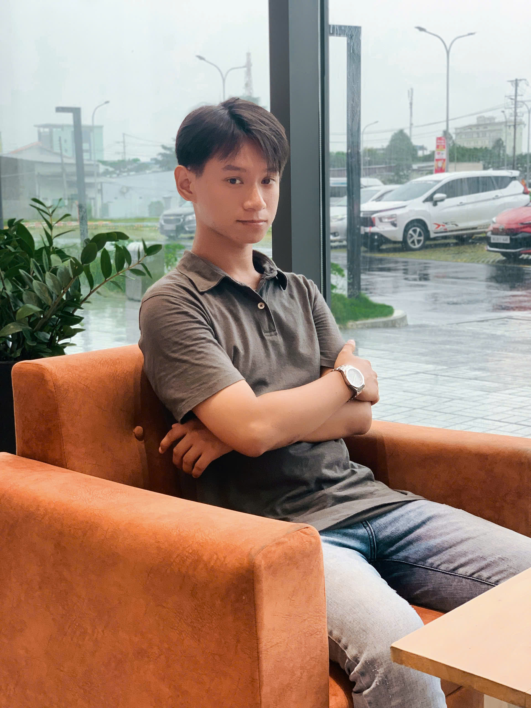
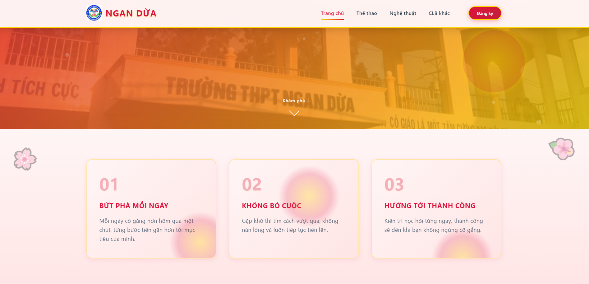
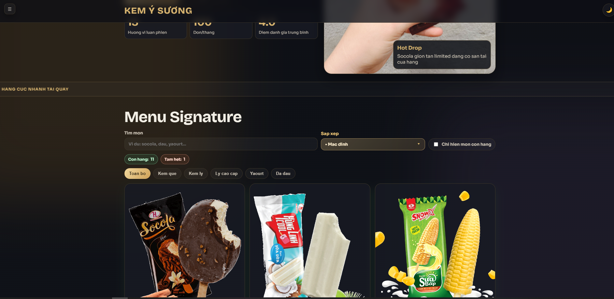
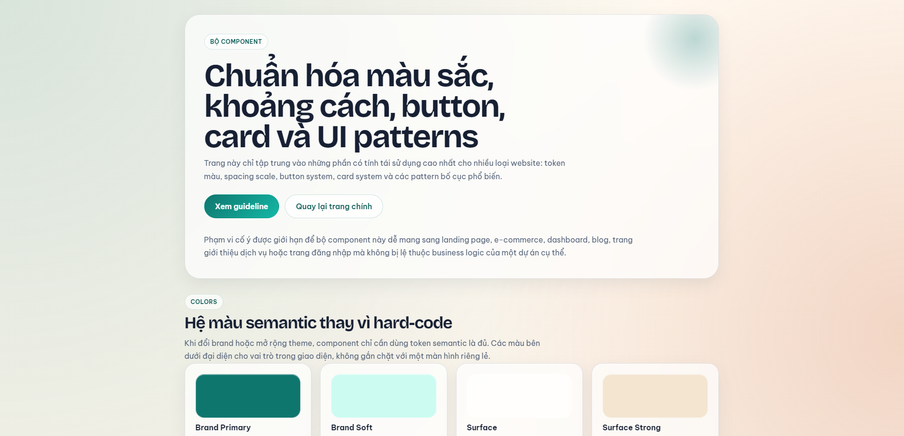

Nền tảng
Học sinh lớp 12, định hướng trở thành Frontend Developer chuyên về giao diện web hiện đại, hiệu năng tốt và dễ bảo trì.
Mình là Bùi Quang Quý, Frontend Developer định hướng xây dựng sản phẩm web đẹp, rõ ràng, tối ưu hiệu năng và dễ mở rộng cho doanh nghiệp.

Frontend Developer
Xây dựng website chỉn chu từ concept đến trải nghiệm sử dụng.
Mục tiêu của mình là tạo ra những giao diện rõ ràng, có cấu trúc, dễ dùng và đủ tinh tế để tạo ấn tượng tốt ngay từ lần đầu truy cập.
Học sinh lớp 12, định hướng trở thành Frontend Developer chuyên về giao diện web hiện đại, hiệu năng tốt và dễ bảo trì.
Ưu tiên semantic HTML, bố cục trực quan, animation vừa đủ và tối ưu hiển thị trên nhiều thiết bị.
Tìm môi trường internship để tham gia dự án thực tế, học quy trình teamwork, review code và phát triển sản phẩm cùng team.
Chỉn chu trong giao diện, chủ động học nhanh, tinh thần cải tiến liên tục và tập trung tạo trải nghiệm người dùng mượt mà.
Điểm mạnh nổi bật
Mình chú trọng spacing, hierarchy, màu sắc, CTA và cảm giác tổng thể để mỗi section đều có điểm nhấn riêng.

Website giới thiệu các câu lạc bộ và hoạt động ngoại khóa trong trường, giúp học sinh dễ dàng tìm hiểu thông tin, lịch hoạt động và kết nối với cộng đồng phù hợp.
Thông tin về câu lạc bộ trong trường thường rời rạc, khó tìm và chưa có nơi tổng hợp trực quan cho học sinh mới.
Xây dựng cổng thông tin với bố cục rõ ràng, phân nhóm nội dung theo từng câu lạc bộ và làm nổi bật lịch hoạt động quan trọng.
Tạo trải nghiệm xem thông tin nhanh hơn, dễ so sánh các câu lạc bộ và giữ giao diện nhất quán trên toàn bộ website.

Website bán kem trực tuyến cho phép người dùng duyệt sản phẩm, đặt hàng nhanh và theo dõi trạng thái đơn hàng theo thời gian thực, tập trung vào trải nghiệm mua sắm mượt mà và trực quan.
Người dùng dễ rời trang khi quy trình chọn sản phẩm và đặt hàng quá dài hoặc thiếu thông tin rõ ràng về trạng thái đơn.
Thiết kế luồng mua hàng ngắn gọn, bổ sung tìm kiếm, bộ lọc và khu vực theo dõi đơn hàng realtime để thao tác dễ hơn.
Trải nghiệm mua sắm trở nên trực quan hơn, người dùng dễ tìm đúng sản phẩm và nắm được tiến trình đơn hàng ngay trên web.

Bộ component khởi đầu giúp chuẩn hóa màu sắc, khoảng cách, button, card và các pattern giao diện cho nhiều trang web khác nhau.
Khi làm nhiều trang hoặc nhiều section, giao diện dễ bị lệch style, khó maintain và mất thời gian chỉnh lại component lặp lại.
Tạo bộ component và quy ước thiết kế cơ bản để tái sử dụng nhanh, đồng thời chuẩn hóa màu sắc, spacing và typography.
Rút ngắn thời gian dựng giao diện mới, tăng độ đồng bộ sản phẩm và giúp việc mở rộng UI về sau rõ ràng hơn.
Giai đoạn 1
Rèn tư duy semantic, responsive, animation cơ bản và cách tạo layout đẹp, sạch, dễ đọc trên cả desktop lẫn mobile.
Giai đoạn 2
Triển khai landing page, website giới thiệu, dashboard và các giao diện có tích hợp dữ liệu để hiểu rõ hơn flow người dùng.
Giai đoạn 3
Mục tiêu hiện tại là tham gia team sản phẩm, học thêm React nâng cao, tối ưu hiệu năng, structure code và kỹ năng làm việc nhóm.
Nếu bạn đang tìm một thực tập sinh frontend có tinh thần học hỏi nhanh và yêu thích việc cải thiện trải nghiệm người dùng, mình rất sẵn sàng kết nối.